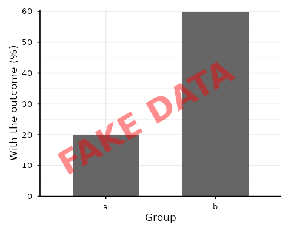

This article is the manual of pbn. It builds one small fake project file by file, and runs it.
What pbn is for
Most analysis projects have a layout of their own. A number in a
manuscript then often has no clear path back to the code and the data
that made it. Tests on fake data, where they exist, run apart from the
analysis. pbn gives each project one layout and one run script. The run
script is a plnr plan, and the real data is one scenario
among fake ones.
The layout
Names are lower case, with a few exceptions such as
README.md and the initials in a manuscript file name.
?check_project lists every exception. Each version of the
analysis has a prefix, here v01_. A project holds these
items at the top level:
v01_run.R the run script of version v01
v01_functions/ the config and the functions that the run script sources
v01_results/<scenario>/ the results and the output of each scenario
v01_results/run.md the log of the last run
v01_cache_gitexclude/ the cache of the data, which git ignores
v01_test/ optional testthat files for the functions
v01_check_functions.R optional checks of the functions
check_project.R one line: pbn::check_project()
pbn.yml the rules of check_project()
manuscript/manual/ manuscripts that a person edits
manuscript/built/vNN/ manuscripts that code builds from the results
background/ documents from outside the project, with names that pbn does not check
adhoc/ work outside the run script
data_describe/ descriptions of the data
README.md what the project is and how to run it
CHANGELOG.md the changes of each version
AGENTS.md the rules for agents that work in the project
.gitignore the files that git leaves outThe rest of this article builds a small fake project in a temporary
folder, file by file, and runs it. The project compares a 0/1 outcome
between two groups, a and b, adjusted for a
covariate x.
root <- file.path(tempdir(), "pbn_get_started")
home <- file.path(root, "project")
dir.create(file.path(home, "v01_functions"), recursive = TRUE)Each project MUST have the file pbn.yml. It names the
set of house rules that check_project() and
initialize_project() use. This project uses the set as it
is:
The real data of this fake project is a small csv file in the folder
data, next to the project folder. In a real project, this
folder holds the real data, and it is outside the repository. The file
has 400 rows, and the column names of a typical export.
data_dir <- file.path(root, "data")
dir.create(data_dir)
set.seed(4)
d <- data.frame(id = 1:400, group = rep(c("a", "b"), 200), x = round(rnorm(400, 50, 10)))
d$outcome <- rbinom(400, 1, ifelse(d$group == "b", 0.4, 0.25))
d$outcome[sample(400, 12)] <- NA
d$x[sample(400, 20)] <- NA
names(d) <- c("Person ID", "Group", "X", "Outcome")
data.table::fwrite(d, file.path(data_dir, "d.csv"))The run script
v01_run.R runs every scenario as one plnr
plan. This is the whole script, and the sections below write each file
that it sources:
pbn::initialize_project(version = "v01", home = ".", folders = c(main = "../data"))
scenarios <- pbn::scenarios(CFG)
p <- plnr::Plan$new()
pbn::add_data(p, "d",
raw = data_raw,
clean = data_clean,
cohort = data_cohort,
after_cohort = data_impute,
cache = TRUE
)
pbn::add_analyses(p, scenarios, name = "table1", fn = make_table1)
pbn::add_analyses(p, scenarios, name = "models", fn = fit_models, adjust = "x")
pbn::add_analyses(p, scenarios, name = "crude", fn = fit_models, adjust = "none", control = TRUE)
pbn::add_analyses(p, scenarios, name = "predicted", fn = predict_risk)
r <- pbn::run_plan(p, workers = 2)
pbn::save_results(r, p, scenarios, gitexclude = "predicted")
pbn::make_outputs(make_output, scenarios)-
pbn::initialize_project()sourcesv01_functions/, and declares the foldermainof the real data. -
pbn::scenarios()checksCFG$scenariosand chooses the scenarios of the run. -
pbn::add_data()adds the four steps of the data, andpbn::add_analyses()adds each analysis kind. -
pbn::run_plan()runs the plan on 2 workers. -
pbn::save_results()saves the results, and checks each fake scenario. -
pbn::make_outputs()writes the figures and the tables.
To look at the data at the console, run the script up to
pbn::add_data(). Then get the data of one scenario and
simulation, here simulation 1 of real:
d <- pbn::get_data(p, "real")$dThe path of main is relative to the project folder,
because the script runs there. In a real project, run it with
Rscript v01_run.R from the project folder.
Three items have gitexclude in their names: the cache, a
results file with data for each person, and the results of each
simulation. In a git repository, run_plan() and
save_results() stop until git ignores them. So
.gitignore MUST hold this line:
*gitexclude*The config and the scenarios
v01_functions/_cfg.R holds the config of version v01.
CFG$scenarios names each scenario and its number of
simulations. The scenario real MUST be there, and it uses
the real data. Each other scenario is fake:
-
knownhas 22 rows, with an odds ratio that a person computed by hand. -
nullhas 140 simulations where the outcome does not depend on the group. -
confoundedhas 140 simulations wherexraises the chance of groupband of the outcome.
The column output chooses the fake scenarios that get
the figures of make_outputs(). Each other column of
CFG$scenarios is a setting of the scenario, and
?scenarios gives the rules. CFG$data holds the
config that the data code reads, and CFG$level is the level
of the confidence intervals.
CFG <- list(
scenarios = data.frame(
scenario = c("real", "known", "null", "confounded"),
sims = c(1, 1, 140, 140),
output = c(FALSE, TRUE, FALSE, FALSE)
),
data = list(n_imp = 3),
level = 0.9,
vars = data.table::data.table(
var = c("outcome", "x"),
type = c("bin", "cont")
)
)The project reports 90% intervals. A check of the coverage of a 95% interval needs 288 simulations, and this article must build in a short time. The section The checks gives the rule.
The data steps
The data has four steps, and each step has its own file in
v01_functions/. pbn::add_data() gets each step
as an argument, and runs the steps in this order:
-
raw:data_raw(scenario, sim)reads the real file, or makes fake data with the same columns. -
clean:data_clean(d)gives the columns clean names. -
cohort:data_cohort(d)applies the exclusions withcohort, and returns the cohort. -
after_cohort:data_impute(cp)imputes the missing values ofx. The section Imputation is data explains it.
pbn takes the steps apart to count the rows between them. Each
exclusion MUST go through $exclude_and_track() in
data_cohort(), so that the exclusion table counts it. So
data_clean() MUST return as many rows as
data_raw() gave it, and the cohort MUST start with all of
them. Otherwise the data fails, and the error gives both numbers of
rows. The section A cleaning step that drops a row shows the error.
data_raw() reads the real file d.csv of the
folder main, with
pbn::folder("main", "d.csv"). Project code reaches a folder
outside the project only through pbn::folder(). A project
MAY declare more folders, for example
folders = c(main = "../data", lookup = "../codes"). pbn
records the name, the size and the modification time of each file under
each folder. It never reads the content of a data file, so a data file
of 60 GB costs no time. A file that changed in place, and kept its size
and its modification time, is not seen. pbn sets the seed to
sim once, before data_raw(), so each
simulation has its own data, and a second run gives the same data.
# known: group a has 11 rows, 2 with the outcome, 8 without, 1 missing.
# Group b has 11 rows, 6 with the outcome, 4 without, 1 missing.
# Odds ratio of b against a: (6 / 4) / (2 / 8) = 6.
# null: the outcome does not depend on the group or on x.
# confounded: x raises the chance of group b and of the outcome. The log odds
# ratio of b against a, adjusted for x, is 0.5.
data_raw <- function(scenario, sim) {
if (scenario == "real") {
return(data.table::fread(pbn::folder("main", "d.csv")))
}
if (scenario == "known") {
return(data.table::data.table(
`Person ID` = 1:22,
Group = rep(c("a", "b"), each = 11),
X = rep(c(31, 45, 38, 52, 40, 33, 47, 36, 50, 42, 44), 2),
Outcome = c(rep(c(1, 0, NA), c(2, 8, 1)), rep(c(1, 0, NA), c(6, 4, 1)))
))
}
conf <- scenario == "confounded"
x <- stats::rnorm(400, 50, 10)
b <- stats::rbinom(400, 1, stats::plogis(conf * (x - 50) / 5))
y <- stats::rbinom(400, 1, stats::plogis(-1 + conf * (0.5 * b + (x - 50) / 10)))
data.table::data.table(
`Person ID` = 1:400,
Group = c("a", "b")[b + 1],
X = replace(round(x), sample(400, 20), NA),
Outcome = y
)
}The comment holds the arithmetic of known and the truth
of confounded, so a reader can check each expected value
without R.
data_clean <- function(d) {
data.table::setnames(d, janitor::make_clean_names(names(d)))
d[, outcome := as.integer(outcome)]
d
}
data_cohort <- function(d) {
cp <- cohort::CohortPipeline$new(d)
cp$exclude_and_track("root", "missing outcome", "is.na(outcome)")
cp
}
data_impute <- function(cp) {
d <- pbn::cohort_data(cp)
fit <- stats::lm(x ~ group + outcome, data = d)
miss <- which(is.na(d$x))
mu <- stats::predict(fit, d[miss])
for (k in seq_len(CFG$data$n_imp)) {
col <- paste0("x_", k)
d[, (col) := x]
data.table::set(d, miss, col, round(mu + stats::rnorm(length(miss), 0, stats::sigma(fit))))
}
d
}The value of data_cohort() is a
cohort::CohortPipeline. pbn::cohort_data(cp)
gives its data.table after the exclusions to the next step. pbn puts the
exclusion table of the cohort on the value of
data_impute(), so save_results() still stores
that table. ?add_data and ?cohort_data give
the rules.
Data that does not fit the four steps, for example data that joins
two cohorts, goes to add_data() as one function:
fn = function(scenario, sim). pbn then checks no rows
inside it, and a step after the cohort in fn returns its
value through pbn::keep_exclusions(x, cp).
The analyses and the controls
An action function takes data and argset,
as in any plnr plan. data$d is the data of the
scenario and simulation. argset holds
scenario, sim, the extra dimensions and the
settings.
make_table1 <- function(data, argset) {
pbn::table1(data$d, by = "group", vars = CFG$vars)
}
# The predicted risk of each person, from the model of the first imputation.
predict_risk <- function(data, argset) {
fit <- stats::glm(outcome ~ group + x_1, family = "binomial", data = data$d)
data.frame(person_id = data$d$person_id, risk = stats::fitted(fit))
}fit_models() fits the model once for each imputation,
and pools the log odds ratio of group b with Rubin’s rules.
The extra dimension adjust chooses the model:
"x" adjusts for x, and "none" is
the crude model.
fit_models <- function(data, argset) {
if (plnr::is_run_directly()) {
argset <- pbn::get_argset(p, "confounded", 3, "models")
data <- pbn::get_data(p, "confounded", 3)
}
est <- numeric(0)
w <- numeric(0)
for (k in seq_len(CFG$data$n_imp)) {
rhs <- if (argset$adjust == "none") "group" else paste0("group + x_", k)
fit <- stats::glm(stats::as.formula(paste("outcome ~", rhs)), family = "binomial", data = data$d)
est[k] <- stats::coef(fit)[["groupb"]]
w[k] <- stats::vcov(fit)["groupb", "groupb"]
pbn::progress(k, CFG$data$n_imp, "imputations")
}
# Rubin's rules: the variance within the imputations, plus (1 + 1/m) times
# the variance between them.
se <- sqrt(mean(w) + (1 + 1 / length(est)) * stats::var(est))
z <- stats::qnorm(1 - (1 - CFG$level) / 2)
data.frame(term = "group b", estimate = mean(est), se = se, lower = mean(est) - z * se, upper = mean(est) + z * se)
}The kind crude has control = TRUE, so it
runs for the fake scenarios only and never appears in the real results.
It is a control: in confounded it MUST be wrong. A crude
model without bias shows that the confounder of the scenario is too weak
for a check of the adjusted model.
The checks and the output function
Each fake scenario needs a function
expect_<scenario>(results). It gets the results of
the scenario, with one element for each analysis kind, and returns the
assertions on them. expect_real() is optional. The section
The checks explains these three:
expect_known <- function(results) {
t1 <- results$table1
observed <- c(
t1$events[t1$var == "outcome" & t1$grp == "b"],
exp(results$crude$estimate)
)
expected <- c(6, 6)
data.frame(
assertion = c("outcome events in group b", "crude odds ratio of b against a"),
expected = expected,
observed = observed,
pass = abs(observed - expected) < 1e-6
)
}
expect_null <- function(results) {
pbn::expect_recovers(results$models, truth = 0, level = CFG$level, label = "adjusted model")
}
expect_confounded <- function(results) {
rbind(
pbn::expect_recovers(results$models, truth = 0.5, level = CFG$level, label = "adjusted model"),
pbn::expect_biased(results$crude, truth = 0.5, label = "crude model")
)
}The output function make_output(results, dir) writes the
figures and the tables of one scenario into the folder dir.
The section The output explains it.
make_output <- function(results, dir) {
pd <- results$table1[var == "outcome" & grp != "All"]
q <- ggplot2::ggplot(pd, ggplot2::aes(x = grp, y = pct))
q <- q + ggplot2::geom_col(width = 0.6, fill = "grey40")
q <- q + ggplot2::expand_limits(y = 0)
q <- q + ggplot2::scale_y_continuous(expand = ggplot2::expansion(mult = c(0, 0.01)))
q <- q + ggplot2::labs(x = "Group", y = "With the outcome (%)")
q <- q + ggplot2::theme_minimal(base_size = 13)
q <- q + ggplot2::theme(
axis.line = ggplot2::element_line(colour = "black", linewidth = 0.6),
axis.ticks = ggplot2::element_line(colour = "black", linewidth = 0.6),
axis.text = ggplot2::element_text(colour = "black"),
axis.title = ggplot2::element_text(colour = "black")
)
q <- pbn::stamp_fake(q)
ggplot2::ggsave(file.path(dir, "outcome_by_group.png"), q, width = 5, height = 4, dpi = 96)
}Running the plan
Here source() with chdir = TRUE runs the
script, so the plan stays in this R session. run_plan()
prints one line for each scenario and simulation, and
save_results() prints the assertions. This chunk counts the
lines of the data:
out <- utils::capture.output(source(file.path(home, "v01_run.R"), chdir = TRUE))
#> Sourcing all code inside /tmp/RtmphEsxNZ/pbn_get_started/project/v01_functions into R_GlobalEnv
data_lines <- grep("^pbn: data", out, value = TRUE)
table(sub("^pbn: data d, [a-z]+ sim_[0-9]{4}: ", "", data_lines))
#>
#> computed, because there is no cache file.
#> 282plnr ran the data steps once for each of the 282 scenarios and
simulations, and gave the data to every analysis of that simulation.
add_analyses() adds one analysis for each scenario,
simulation and value of the extra dimensions. pbn adds the analyses
<scenario>__sim_<kkkk>__pbn_n_rows, which count
the rows of the data for the manifest.
length(p$analyses)
#> [1] 1409
head(names(p$analyses), 5)
#> [1] "real__sim_0001__pbn_n_rows" "known__sim_0001__pbn_n_rows"
#> [3] "null__sim_0001__pbn_n_rows" "null__sim_0002__pbn_n_rows"
#> [5] "null__sim_0003__pbn_n_rows"workers = 2 runs the analyses on 2 new R sessions, in a
PSOCK cluster, through the packages future and doFuture. pbn gives each
worker the objects that v01_functions/ defines and the
attached packages, so the functions find CFG and each
other. The data and each analysis set their own seed. So one analysis by
hand in this R session gives the value of the worker:
by_hand <- p$run_one("confounded__sim_0003__models__1")
#> pbn: data d, confounded sim_0003: reused the cache of 2026-11-18 08:04.
identical(by_hand, r[["confounded__sim_0003__models__1"]])
#> [1] TRUEThis holds for functions that depend only on their arguments, the
functions and CFG of v01_functions/, the
attached packages and the seed. pbn does not copy the R options to the
workers.
Each worker runs with 1 thread. Without this, packages such as
data.table, fixest and a threaded BLAS start many threads in each
worker. The computer then runs far more threads than it has cores.
run_plan() starts each worker with
OMP_NUM_THREADS, OPENBLAS_NUM_THREADS and
MKL_NUM_THREADS at 1, and calls
data.table::setDTthreads(1) there. An analysis that needs
more threads sets them in its own code, for example
data.table::setDTthreads(4) at the top of its function.
With workers = 1, pbn changes no thread setting.
?run_plan gives the caveat of a threaded BLAS.
An analysis MUST NOT change CFG or another object of
v01_functions/. A later analysis in the same R session
would see the change, so its result would depend on the analyses before
it. run_plan() fails such an analysis, also for the index
that a data.table subset such as CFG$vars[var == "x"] adds
in place. ?add_analyses gives the rules.
Progress
run_plan() shows one line for each scenario: its
finished analyses, the time since its start, and a note. In an
interactive terminal, it draws the lines again in place, for
example:
pbn: 4 scenarios, 2 workers, started 14:02, 1m 11s
real 3/3 analyses 5s done
known 4/4 analyses 1s done
null 168/560 analyses 1m 05s models (x, sim 43) imputations 2/3 66%
confounded 0/560 analyses waitingThe header gives the time since the start of the run. In RStudio, it
draws one line again in place. A run with Rscript into a
log adds lines instead, and each line starts with the time since the
start of the run:
pbn: [12m 05s] null 522/1200 analyses, 8m 53s, about 12m leftIt adds none in the first 60 seconds of the run, so a short run adds
none. After that, it adds one line when a scenario finishes. A running
scenario gets at most one line every 60 seconds, and only with 10% more
done. The section Progress of ?run_plan gives the
rules.
A line counts the failed analyses too, for example
null 37/1200 analyses, 12 failed. The time left comes from
the analyses without a failure. The first failed analysis stops the run,
because pbn saves nothing from a run with a failure. The display says so
at once, also in the first 60 seconds of a log:
pbn: [3s] an analysis of the scenario real failed, so the run stops early: no new analysis starts.fit_models() calls pbn::progress() in its
loop over the imputations. While the analysis runs, the line of its
scenario shows its text, as for null above. The text holds
the kind, the values of the extra dimensions, the simulation, the step
and the percent. Outside run_plan(),
pbn::progress() only checks its arguments, so the function
also runs by hand.
pbn::progress() does nothing in a forked child process,
for example inside parallel::mclapply(). Call it in the
loop of the analysis, between chunks of the work:
The results
save_results() wrote one results object for each
scenario and simulation. git gets one results.qs2 for each
scenario, and check.csv, the table of the assertions of a
fake scenario. For more than 1 simulation, results.qs2
holds the simulations stacked. The results of each simulation are in
sims_gitexclude/, which git ignores. Here
sim_<kkkk> stands for the 140 simulations:
files <- list.files(file.path(home, "v01_results"), recursive = TRUE)
unique(sub("sim_[0-9]{4}", "sim_<kkkk>", files))
#> [1] "confounded/check.csv"
#> [2] "confounded/results_gitexclude.qs2"
#> [3] "confounded/results.qs2"
#> [4] "confounded/sims_gitexclude/sim_<kkkk>_gitexclude.qs2"
#> [5] "confounded/sims_gitexclude/sim_<kkkk>.qs2"
#> [6] "known/check.csv"
#> [7] "known/output_fake_data/fake_data_outcome_by_group.png"
#> [8] "known/results_gitexclude.qs2"
#> [9] "known/results.qs2"
#> [10] "null/check.csv"
#> [11] "null/results_gitexclude.qs2"
#> [12] "null/results.qs2"
#> [13] "null/sims_gitexclude/sim_<kkkk>_gitexclude.qs2"
#> [14] "null/sims_gitexclude/sim_<kkkk>.qs2"
#> [15] "real/output/outcome_by_group.png"
#> [16] "real/results_gitexclude.qs2"
#> [17] "real/results.qs2"
#> [18] "run.md"A results object is a named list. The first element is
manifest, and the second is exclusions, the
exclusion table of the cohort. Then comes one element for each analysis
kind. The data.frames of one kind are row-bound, with the extra
dimension adjust as the first column.
?save_results gives the rules.
res <- pbn::read_results("v01", home = home)
names(res)
#> [1] "manifest" "exclusions" "table1" "models" "predicted"
res$exclusions
#> data step n_before n_excluded n_after
#> 1 d missing outcome 400 12 388
res$models
#> adjust term estimate se lower upper
#> 1 x group b 0.560694 0.2267864 0.1876635 0.9337245read_results() reads the real results by default. With
scenario, it reads the results of a fake scenario, and with
sim one simulation from sims_gitexclude/. A
clone of the repository has no such file, so read_results()
with sim then stops and says how to make the file. The
stacked results of confounded have a first column
sim:
confounded <- pbn::read_results("v01", scenario = "confounded", home = home)
head(confounded$models, 3)
#> sim adjust term estimate se lower upper
#> 1 1 x group b 0.6138863 0.2640282 0.1795986 1.0481741
#> 2 2 x group b 0.1540285 0.2794747 -0.3056665 0.6137234
#> 3 3 x group b 0.6156965 0.2775615 0.1591484 1.0722446The manifest records where the results come from. It holds the
versions of R, pbn and the packages of this R session and of the
workers, the date, the scenario and the simulation.
source_md5 holds the md5 of v01_run.R and of
each file in v01_functions/ but blocks.R. For
the real data, data_files holds the name, the size and the
modification time of each data file. The name is
<folder>/<path in the folder>, for example
main/d.csv. It never holds the path of a folder. So the
same files in another place give the same results, when the copy keeps
the modification times. A copy with new times looks like changed data,
and the cache computes the data again. For a fake scenario,
fake_md5 holds the md5 of the code of the data steps.
n_rows_data holds the number of rows of the data after the
exclusions.
str(res$manifest[c("scenario", "sim", "sims", "data_files", "n_rows_data", "n_rows_before_exclusions", "analyses")])
#> List of 7
#> $ scenario : chr "real"
#> $ sim : int 1
#> $ sims : int 1
#> $ data_files :'data.frame': 1 obs. of 3 variables:
#> ..$ file : chr "main/d.csv"
#> ..$ size : num 4266
#> ..$ mtime: num 1.79e+09
#> $ n_rows_data : Named int 388
#> ..- attr(*, "names")= chr "d"
#> $ n_rows_before_exclusions: Named int 400
#> ..- attr(*, "names")= chr "d"
#> $ analyses :'data.frame': 3 obs. of 3 variables:
#> ..$ analysis: chr [1:3] "table1" "models" "predicted"
#> ..$ control : logi [1:3] FALSE FALSE FALSE
#> ..$ file : chr [1:3] "results.qs2" "results.qs2" "results_gitexclude.qs2"save_results() checks each results object with
check_results() before it writes anything. It stops on a
fitted model or a function in the results. It also stops on a table with
one row for each row of the data, before or after the exclusions. That
check compares sizes only, so check the small groups by hand.
Results with data for each person
A results file goes to git, so it MUST NOT hold one row for each
person. Some results do: fitted models, the imputations, or the
predicted risk of predict_risk().
save_results(gitexclude = "predicted") writes that kind to
results_gitexclude.qs2, beside results.qs2,
and to sim_<kkkk>_gitexclude.qs2 for each simulation.
The line *gitexclude* of .gitignore keeps that
file out of git. read_results() reads both files and
returns one list:
list.files(file.path(home, "v01_results", "real"))
#> [1] "output" "results_gitexclude.qs2" "results.qs2"
nrow(res$predicted)
#> [1] 388A coauthor who clones the repository has no
results_gitexclude.qs2. read_results() then
returns the other elements, with one warning:
private <- file.path(home, "v01_results", "real", "results_gitexclude.qs2")
file.rename(private, file.path(root, "kept.qs2"))
#> [1] TRUE
names(pbn::read_results("v01", home = home))
#> Warning: The manifest names the analysis kinds predicted in
#> /tmp/RtmphEsxNZ/pbn_get_started/project/v01_results/real/results_gitexclude.qs2,
#> and that file is missing, for example in a clone of the repository.
#> read_results() returns the other elements.
#> [1] "manifest" "exclusions" "table1" "models"
file.rename(file.path(root, "kept.qs2"), private)
#> [1] TRUEcheck_results() and check_project() do not
check what the kinds in gitexclude hold, so
predicted passes the check of the rows of the data. The
check_project() rule gitexclude_not_tracked
fails when git tracks a path with gitexclude in its
name.
The run log
save_results() writes the log of the run to
v01_results/run.md, and make_outputs() adds
its files to it. Each run replaces the file. The log holds these
items:
- the result of the run, and the failures first
- the scenarios, the cache and the rows of the data, and the exclusion tables
- the assertions, the output files and the results files
- the timings
- the history, one line for each run of this version
It holds counts and assertions only, as check.csv does.
It never holds the text of an error, because an error message can hold a
value of the data. It gives each error a number, and
v01_results/run_errors_gitexclude.md holds the text, out of
git. ?save_results lists the errors. These are the first
sections of the log of the run above:
log <- readLines(file.path(home, "v01_results", "run.md"))
cat(log[seq_len(grep("^## Exclusions", log) - 1)], sep = "\n")#> # Run log of `project`, version v01
#>
#> ## When
#>
#> The run started 2026-11-18 08:04:19 +0000. This section and the sections Timings and History change in every run. The other sections change when the code, the data, the cache, the packages or the files on the disk change.
#>
#> ## Run
#>
#> - Result: All 9 assertions passed.
#> - Scenarios of this run: real, known, null and confounded.
#> - R version 4.6.2 (2026-10-29).
#> - Packages: pbn 2026.11.23, plnr 2026.11.19 and cohort 2026.11.18, and 58 other packages, listed in the manifest of each results file.
#> - Workers: 2.
#>
#> ## Scenarios
#>
#> | Scenario | Simulations | Analyses |
#> |------------|------------:|---------:|
#> | real | 1 | 3 |
#> | known | 1 | 4 |
#> | null | 140 | 560 |
#> | confounded | 140 | 560 |
#>
#> ## Data
#>
#> | Data | Scenario | Simulations | Cache | Rows before exclusions | Rows after exclusions | Rows of the data |
#> |---------|------------|------------:|--------------|-----------------------:|----------------------:|-----------------:|
#> | d | real | 1 | computed 1 | 400 | 388 | 388 |
#> | d | known | 1 | computed 1 | 22 | 20 | 20 |
#> | d | null | 140 | computed 140 | 400 | 400 | 400 |
#> | d | confounded | 140 | computed 140 | 400 | 400 | 400 |
#>
#> The scenario real reads the folder `main` (1 file).
#>
#> The cache line of simulation 1 of each scenario, as run_plan() printed it:
#>
#> ```
#> pbn: data d, real sim_0001: computed, because there is no cache file.
#> pbn: data d, known sim_0001: computed, because there is no cache file.
#> pbn: data d, null sim_0001: computed, because there is no cache file.
#> pbn: data d, confounded sim_0001: computed, because there is no cache file.
#> ```The log is Markdown, so it reads well as plain text and on GitHub.
Put it in git. Only the sections When, Timings and History change in
every run, so git diff on the log shows the real changes of
a run. The sections Timings and History come last.
The timings are seconds on the clock. pbn measures each data step and
each analysis where it runs, also on a worker. A scenario runs from the
start of its first data step or analysis to the end of its last one.
With 2 workers the scenarios overlap, so their seconds do not add up to
those of run_plan(). Each data step and analysis kind gets
the median and the maximum seconds of one call, and its share of all the
seconds:
cat(log[seq(grep("^## Timings", log), grep("^## History", log) - 1)], sep = "\n")
#> ## Timings
#>
#> The numbers of this section change in every run. Each one is seconds on the clock. pbn measures a data step and an analysis where it runs, also on a worker.
#>
#> ### Main session
#>
#> | Step | Wall seconds |
#> |----------------------------------------------------|-------------:|
#> | run_plan() | 10.35 |
#> | save_results(): build, write and stack the results | 1.69 |
#> | save_results(): the checks of check_results() | 0.90 |
#> | save_results(): the expect_ functions | 0.02 |
#> | save_results() in total | 2.70 |
#> | make_outputs(): real | 0.78 |
#> | make_outputs(): known | 0.30 |
#>
#> ### Scenarios
#>
#> A scenario runs from the start of its first data step or analysis to the end of its last one. With workers, the scenarios overlap, so these seconds do not add up to the seconds of run_plan().
#>
#> | Scenario | Wall seconds |
#> |------------|-------------:|
#> | real | 0.60 |
#> | known | 0.09 |
#> | null | 4.40 |
#> | confounded | 4.24 |
#>
#> ### Data steps
#>
#> | Data | Scenario | Step | Calls | Median | Maximum | Share |
#> |------|------------|--------------|------:|-------:|--------:|------:|
#> | d | real | raw | 1 | 0.02 | 0.02 | 0.2% |
#> | d | real | clean | 1 | 0.30 | 0.30 | 3.8% |
#> | d | real | cohort | 1 | 0.01 | 0.01 | 0.1% |
#> | d | real | after_cohort | 1 | 0.03 | 0.03 | 0.3% |
#> | d | known | raw | 1 | 0.00 | 0.00 | 0.0% |
#> | d | known | clean | 1 | 0.01 | 0.01 | 0.1% |
#> | d | known | cohort | 1 | 0.00 | 0.00 | 0.0% |
#> | d | known | after_cohort | 1 | 0.00 | 0.00 | 0.0% |
#> | d | null | raw | 140 | 0.00 | 0.01 | 0.8% |
#> | d | null | clean | 140 | 0.01 | 0.17 | 13% |
#> | d | null | cohort | 140 | 0.00 | 0.01 | 1.5% |
#> | d | null | after_cohort | 140 | 0.00 | 0.02 | 6.7% |
#> | d | confounded | raw | 140 | 0.00 | 0.00 | 0.4% |
#> | d | confounded | clean | 140 | 0.01 | 0.01 | 11% |
#> | d | confounded | cohort | 140 | 0.00 | 0.01 | 1.6% |
#> | d | confounded | after_cohort | 140 | 0.00 | 0.01 | 6.4% |
#>
#> ### Analysis kinds
#>
#> | Scenario | Kind | Analyses | Median | Maximum | Share |
#> |------------|-----------|---------:|-------:|--------:|------:|
#> | real | table1 | 1 | 0.00 | 0.00 | 0.1% |
#> | real | models | 1 | 0.12 | 0.12 | 1.5% |
#> | real | predicted | 1 | 0.00 | 0.00 | 0.0% |
#> | known | table1 | 1 | 0.00 | 0.00 | 0.1% |
#> | known | models | 1 | 0.01 | 0.01 | 0.1% |
#> | known | crude | 1 | 0.00 | 0.00 | 0.1% |
#> | known | predicted | 1 | 0.00 | 0.00 | 0.0% |
#> | null | table1 | 140 | 0.00 | 0.01 | 3.6% |
#> | null | models | 140 | 0.00 | 0.12 | 12% |
#> | null | crude | 140 | 0.00 | 0.01 | 8.8% |
#> | null | predicted | 140 | 0.00 | 0.01 | 2.9% |
#> | confounded | table1 | 140 | 0.00 | 0.01 | 3.6% |
#> | confounded | models | 140 | 0.01 | 0.01 | 10% |
#> | confounded | crude | 140 | 0.00 | 0.01 | 8.8% |
#> | confounded | predicted | 140 | 0.00 | 0.00 | 2.8% |
#>
#> Median and Maximum are the seconds of one call. Share is the part of the seconds of all data steps and analyses of the run.The section History has one line for each run of this version, oldest
first, with its result and the wall seconds of its steps. At its start,
run_plan() adds the line “did not finish”, and the full log
replaces it. A run that R stops thus keeps that line. The history is in
run.md only, so a deleted run.md starts it
again. The section A check that goes red below adds lines to it.
pbn::render_run("v01") renders the log to
v01_results/run.pdf. It needs Quarto, and no LaTeX. The PDF
is made from run.md, so keep it out of git, for example
with the line run.pdf in .gitignore:
pdf <- withr::with_dir(home, pbn::render_run("v01"))
file.exists(file.path(home, pdf))The checks
save_results() calls
expect_<scenario>() on the results of each fake
scenario, and writes the assertions to check.csv. It stops
when one did not pass.
expect_known() tests two outputs against numbers that a
person computed by hand. It does not test how the analysis behaves on
data as large or as untidy as the real data.
expect_null() and expect_confounded() are
recovery checks. pbn::expect_recovers() checks the bias,
the standard error and the coverage of the estimate over the
simulations. Each limit comes from the Monte Carlo standard error of the
measure. pbn::expect_biased() checks that the control is
biased. These are the assertions of confounded:
| assertion | expected | observed | pass |
|---|---|---|---|
| adjusted model: bias of estimate against 0.5 | |bias| <= 0.0932 (3.89 MCSE); can detect |bias| of 0.113 | 0.031; 140 of 140 simulations | TRUE |
| adjusted model: model SE of estimate against its SD | |relative error| <= 23.6% (3.89 MCSE); can detect ModSE/EmpSE of 0.772 or 1.37 | +1.1% (ModSE 0.286, EmpSE 0.283); 140 of 140 simulations | TRUE |
| adjusted model: coverage of 0.5 by the 90% interval | 0.801 to 0.999 (3.89 MCSE); can detect coverage of 0.771 | 0.914; 140 of 140 simulations | TRUE |
| crude model: bias of estimate against 0.5, a control | |bias| > 0.0715 (3.89 MCSE); can detect |bias| of 0.087 | 1.05; 140 of 140 simulations | TRUE |
“can detect” is the smallest error that the check finds with a
probability of 80% at this number of simulations. A row passes when
observed is inside the limit in expected, and
a large “can detect” means that the row passes almost anything.
Give the checks the estimate on the scale where it is near normal: a
log odds ratio, with a truth on the log scale. Below 100 simulations, or
137 for the coverage at the level 0.9, each assertion fails with “too
few simulations to check”.
expect_recovers(coverage = FALSE) makes no coverage
assertion, so 100 simulations are enough, and x needs no
lower and upper. ?expect_recovers
gives the formulas, the rule for missing estimates and the probability
of a false alarm.
The crude model does not recover the truth of
confounded. These are the assertions that a wrong analysis
gets:
pbn::expect_recovers(confounded$crude, truth = 0.5, level = CFG$level, label = "crude model")[, c("assertion", "observed", "pass")]
#> assertion
#> 1 crude model: bias of estimate against 0.5
#> 2 crude model: model SE of estimate against its SD
#> 3 crude model: coverage of 0.5 by the 90% interval
#> observed pass
#> 1 1.05; 140 of 140 simulations FALSE
#> 2 +6.0% (ModSE 0.231, EmpSE 0.218); 140 of 140 simulations TRUE
#> 3 0.000; 140 of 140 simulations FALSEA check that goes red
The runs below need the scenarios real and
known only. Change the second line of
v01_run.R, so that each run takes a few seconds:
run_file <- file.path(home, "v01_run.R")
script <- readLines(run_file)
script <- sub("pbn::scenarios(CFG)", 'pbn::scenarios(CFG, only = c("real", "known"))', script, fixed = TRUE)
writeLines(script, run_file)
script[2]
#> [1] "scenarios <- pbn::scenarios(CFG, only = c(\"real\", \"known\"))"run_lines() runs the script in a new R session, and
shows the lines of the data:
run_lines <- function(status = 0) {
out <- callr::rscript(run_file, wd = home, show = FALSE, fail_on_status = FALSE)
stopifnot(out$status == status)
lines <- grep("^pbn: data", strsplit(out$stdout, "\r?\n")[[1]], value = TRUE)
cat(lines, sep = "\n")
invisible(lines)
}Make one small error in the analysis: swap the two branches of the
if in fit_models(). The crude model is then
adjusted for x, and the adjusted model is crude. Keep a
copy of the file first.
file <- file.path(home, "v01_functions", "fit_models.R")
file.copy(file, file.path(root, "fit_models_copy.R"))
#> [1] TRUE
code <- readLines(file)
code <- sub('"group" else paste0("group + x_", k)', 'paste0("group + x_", k) else "group"', code, fixed = TRUE)
writeLines(code, file)
grep("rhs <-", readLines(file), value = TRUE)
#> [1] " rhs <- if (argset$adjust == \"none\") paste0(\"group + x_\", k) else \"group\""
red <- run_lines(status = 1)
#> pbn: data d, real sim_0001: reused the cache of 2026-11-18 08:04.
#> pbn: data d, known sim_0001: reused the cache of 2026-11-18 08:04.
cat(readLines(file.path(home, "v01_results", "known", "check.csv")), sep = "\n")
#> "assertion","expected","observed","pass"
#> "outcome events in group b",6,6,TRUE
#> "crude odds ratio of b against a",6,7.0369269141867,FALSEThe real data runs through the same functions as the fake data. A
fake scenario with a known answer thus tests the analysis that gives the
real results. On the real data, the swapped models give plausible odds
ratios and no error. Only the planted odds ratio shows the mistake. The
results files stay, so that you can find the fault, but
read_results() stops on them:
pbn::read_results("v01", scenario = "known", home = home)
#> Error:
#> ! /tmp/RtmphEsxNZ/pbn_get_started/project/v01_results/known/check.csv holds an assertion that did not pass, so read_results() does not read /tmp/RtmphEsxNZ/pbn_get_started/project/v01_results/known/results.qs2. Fix the analysis and run it again. To look at the results for debugging, read them with qs2::qs_read("/tmp/RtmphEsxNZ/pbn_get_started/project/v01_results/known/results.qs2").Put the copy back, and run the script again. Its assertions pass.
A cleaning step that drops a row
Make data_clean() drop the rows with a missing outcome.
That is an exclusion, and it belongs in data_cohort(),
where it is already. Keep a copy of the file first, and show the first
failed analysis:
clean_file <- file.path(home, "v01_functions", "data_clean.R")
file.copy(clean_file, file.path(root, "data_clean_copy.R"))
#> [1] TRUE
code <- sub("^ d$", " d[!is.na(outcome)]", readLines(clean_file))
writeLines(code, clean_file)
out <- callr::rscript(run_file, wd = home, show = FALSE, fail_on_status = FALSE)
lines <- strsplit(out$stdout, "\r?\n")[[1]]
cat(lines[grep(" failed:$", lines)[1] + 0:1], sep = "\n")
#> pbn: the analysis real__sim_0001__pbn_n_rows failed:
#> The data function 'd' failed: The step clean of the data "d" returned 388 rows, but the step raw returned 400 rows. The step clean MUST return a data.frame with the same number of rows. Put each exclusion in the step cohort, with $exclude_and_track(), so that pbn counts it.Each analysis gets the failed data, so each one fails, and
save_results() does not run. In a longer run, the first
failed analysis stops the run, and the analyses after it do not run.
?run_plan gives the rules of the stop. Put the copy
back:
Imputation is data
A multiple imputation can take hours, and every analysis reads its
result. So it belongs in the data, as the step
after_cohort. With cache = TRUE in
add_data(), run_plan() saves the data on disk
for each scenario and simulation, in v01_cache_gitexclude/.
The next run reads it again while the cache key is the same. A change of
an analysis then runs the analyses only.
data_impute() is the step after the cohort, so the
imputation model uses the people of the cohort only. It draws
CFG$data$n_imp values for each missing x, from
a linear model of x on group and the outcome,
with a normal error. It writes the draws to the columns
x_1, x_2 and x_3, and keeps one
row for each person. This is stochastic regression imputation. It does
not draw the parameters of the model, so it is not a proper multiple
imputation.
The two runs of the section A check that goes red read the cache.
Change an analysis: fit_models() also reports the number of
imputations. The data comes from the cache again:
code <- readLines(file)
code <- sub("upper = mean(est) + z * se)", "upper = mean(est) + z * se, n_imp = length(est))", code, fixed = TRUE)
writeLines(code, file)
third <- run_lines()
#> pbn: data d, real sim_0001: reused the cache of 2026-11-18 08:04.
#> pbn: data d, known sim_0001: reused the cache of 2026-11-18 08:04.
pbn::read_results("v01", home = home)$models
#> adjust term estimate se lower upper n_imp
#> 1 x group b 0.560694 0.2267864 0.1876635 0.9337245 3Change the data code: data_impute() keeps one decimal of
each draw. pbn computes the data again, and names the changed file and
the changed step:
code <- readLines(file.path(home, "v01_functions", "data_impute.R"))
code <- sub("round(mu + ", "round(digits = 1, mu + ", code, fixed = TRUE)
writeLines(code, file.path(home, "v01_functions", "data_impute.R"))
fourth <- run_lines()
#> pbn: data d, real sim_0001: computed, because v01_functions/data_impute.R, the function given as `after_cohort` changed.
#> pbn: data d, known sim_0001: computed, because v01_functions/data_impute.R, the function given as `after_cohort` changed.The section History of the run log now has one line for each run of
this article. The runs with only = c("real", "known") name
their scenarios:
log <- readLines(file.path(home, "v01_results", "run.md"))
cat(log[seq(grep("^## History", log) + 4, length(log))], sep = "\n")
#> | Started | Result | Scenarios | Workers | run_plan() | save_results() | make_outputs() | pbn |
#> |---------------------|--------------------------|-------------|---------:|-----------:|---------------:|---------------:|------------|
#> | 2026-11-18 08:04:19 | All 9 assertions passed | 4 | 2 | 10.35 | 2.70 | 1.08 | 2026.11.23 |
#> | 2026-11-18 08:04:34 | 1 of 2 assertions failed | real, known | 2 | 1.37 | 0.05 | | 2026.11.23 |
#> | 2026-11-18 08:04:36 | All 2 assertions passed | real, known | 2 | 1.34 | 0.03 | 0.95 | 2026.11.23 |
#> | 2026-11-18 08:04:39 | 9 of 9 analyses failed | real, known | 2 | 1.56 | | | 2026.11.23 |
#> | 2026-11-18 08:04:42 | All 2 assertions passed | real, known | 2 | 1.38 | 0.03 | 0.96 | 2026.11.23 |
#> | 2026-11-18 08:04:44 | All 2 assertions passed | real, known | 2 | 1.62 | 0.03 | 1.00 | 2026.11.23 |The cache key holds the md5 of each data_*.R file of
v01_functions/, and CFG$data. It also holds
the code of each step, the fingerprint of the raw data, the settings,
the versions of R and pbn, and RNGkind(). Beside the key,
pbn records the version of each package loaded when the data was
computed. A new version of one of them computes the data again.
?add_data gives the full rule. Keep the data code in
data_*.R files: a change in another file does not change
the key. To compute every value again, delete
v01_cache_gitexclude/.
Stepping through one analysis by hand
The names of the analyses are
<scenario>__sim_<kkkk>__<name>__<i>.
<i> counts the values of the extra dimensions.
pbn::get_argset(p, "confounded", 3, "models", 1) gives the
argset of confounded__sim_0003__models__1, and
pbn::get_data(p, "confounded", 3) gives its data. The last
argument of get_argset(), <i>, is 1 by
default. Put back the second line of v01_run.R, so that the
plan has every scenario:
script <- sub('pbn::scenarios(CFG, only = c("real", "known"))', "pbn::scenarios(CFG)", readLines(run_file), fixed = TRUE)
writeLines(script, run_file)To step through one analysis of fit_models() by hand,
run the script up to pbn::run_plan(). Then run the body of
the function line by line. At the top level of the console,
plnr::is_run_directly() is TRUE, so the first
lines load that analysis:
upto <- script[seq_len(grep("run_plan", script) - 1)]
withr::with_dir(home, eval(parse(text = upto)))
#> Sourcing all code inside /tmp/RtmphEsxNZ/pbn_get_started/project/v01_functions into R_GlobalEnv
argset <- pbn::get_argset(p, "confounded", 3, "models")
data <- pbn::get_data(p, "confounded", 3)
#> pbn: data d, confounded sim_0003: computed, because v01_functions/data_impute.R, the function given as `after_cohort` changed.
argset$adjust
#> [1] "x"
nrow(data$d)
#> [1] 400pbn::get_data() uses the cache, as
p$get_data() does. The data code changed after the first
run, so it computed the data again, and it gave the reason. When the
plan runs fit_models(),
plnr::is_run_directly() is FALSE, and the
first lines do nothing. The plan calls
set.seed(argset$seed) before each analysis. Run that line
too before you step through a function that draws random numbers.
?add_analyses says how pbn derives the seed from the kind,
its counter and the simulation.
The output
pbn::make_outputs(make_output, scenarios) calls the
output function for real and for each fake scenario with
output = TRUE. The folder of real is
v01_results/real/output/. The folder of a fake scenario is
v01_results/<scenario>/output_fake_data/, and pbn
renames each file there so that its name starts with
fake_data_. Before each call, it empties the folder, so no
file of an earlier run stays.
files <- list.files(file.path(home, "v01_results"), recursive = TRUE)
grep("output", files, value = TRUE)
#> [1] "known/output_fake_data/fake_data_outcome_by_group.png"
#> [2] "real/output/outcome_by_group.png"q <- pbn::stamp_fake(q) in make_output()
puts the label “FAKE DATA” on the figure of a fake scenario. It returns
the figure as it is for real. This is the figure of
known:

A table or a text file of fake data has the name prefix and the
folder name only, and no label. The check_project() rule
fake_data_names fails a file in
output_fake_data/ without the prefix, and a file with the
prefix in another folder.
A script with output code after the run that is not in a function MAY
use pbn::end_unless_real(scenarios) after
save_results(). It ends the script when the run had no real
data.
Checking the project
check_project.R holds one line.
pbn::check_project()check_project() checks a project folder against the
rules of pbn.yml. It prints the name of the set, one line
for each rule that passes, one line for each finding, and a count. The
rule cyclomatic_complexity fails a function that scores
above 15 in cyclocomp, as the lint gate of the house
packages does. The rule no_local_assign fails
local(), assign(), <<- and
the other constructs of ?check_project. Each object then
gets its value on the line that names it.
pbn::check_project(home)
#> Rules: house_2026_11_17, 0 overrides, 0 allowed paths (pbn.yml)
#> PASS lower_case_names no capital letter in a name
#> PASS run_script_initialises every vNN_run.R calls pbn::initialize_project() with its own version
#> PASS version_items_complete every vNN_run.R has a vNN_functions/, and the reverse
#> PASS results_contract every vNN_results/<scenario>/results.qs2 and each vNN_results/<scenario>/sims_gitexclude/sim_NNNN.qs2 on the disk passes check_results()
#> PASS gitexclude_not_tracked the project is not a git repository, so nothing to check
#> PASS scenario_checks every vNN_results/<scenario>/check.csv passes
#> PASS manual_manuscript_names every file in manuscript/manual/ is named vNN_<INITIALS>.docx
#> PASS manuscript_reads_real manuscript/built/ reads only the real results
#> PASS fake_data_names every file in an output_fake_data/ folder, and no file elsewhere, has a name that starts with fake_data_
#> PASS no_local_copy_of_pbn_function no vNN_functions/ file defines a pbn export
#> PASS loc_per_file no .R file has more than 1000 code lines
#> PASS cyclomatic_complexity no function of an .R file has a cyclomatic complexity above 15
#> PASS no_environment_variables no Sys.getenv or Sys.setenv in a run script or a functions folder
#> PASS no_local_assign no .R file calls local, assign, delayedAssign, assignInNamespace or assignInMyNamespace, or uses <<- or ->>
#> PASS no_absolute_paths no .R file has an absolute path or a file.path() from a string, outside the arguments of pbn::initialize_project() and pbn::to_one_file()
#> PASS blocks_list blocks, when a functions folder has it, is a list of named functions in vNN_functions/blocks.R, and no other code uses a name of that file
#> PASS real_results_are_fake no real results on the disk come from fake real data
#> PASS unknown_path the house layout names every top-level path
#> 18 PASS, 0 WARN, 0 FAIL, 0 OFFIn a non-interactive R session, check_project() quits R
with status 1 when a rule fails. Add a file with a capital letter in its
name, and run check_project.R in a new R session:
dir.create(file.path(home, "adhoc"))
writeLines("notes", file.path(home, "adhoc", "Notes.txt"))
out <- callr::rscript(file.path(home, "check_project.R"), wd = home, show = FALSE, fail_on_status = FALSE)
out$status
#> [1] 1
cat(grep("FAIL", strsplit(out$stdout, "\r?\n")[[1]], value = TRUE), sep = "\n")
#> FAIL lower_case_names adhoc/Notes.txt: the name has a capital letter
#> 17 PASS, 0 WARN, 1 FAIL, 0 OFF
unlink(file.path(home, "adhoc"), recursive = TRUE)pbn.yml MAY change the set. Under rules, it
changes the level or a parameter of a rule. Under allow, it
lists the paths that a rule allows. This file raises the limit of
cyclomatic_complexity to 25, turns
unknown_path off, and allows one name with a capital
letter:
extends: house_2026_11_17
rules:
cyclomatic_complexity: {limit: 25}
unknown_path: off
allow:
lower_case_names: [adhoc/Notes.txt]
dir.create(file.path(home, "adhoc"))
writeLines("notes", file.path(home, "adhoc", "Notes.txt"))
pbn::check_project(home)
#> Rules: house_2026_11_17, 2 overrides, 1 allowed path (pbn.yml)
#> WARN lower_case_names adhoc/Notes.txt: the name has a capital letter (allowed)
#> PASS run_script_initialises every vNN_run.R calls pbn::initialize_project() with its own version
#> PASS version_items_complete every vNN_run.R has a vNN_functions/, and the reverse
#> PASS results_contract every vNN_results/<scenario>/results.qs2 and each vNN_results/<scenario>/sims_gitexclude/sim_NNNN.qs2 on the disk passes check_results()
#> PASS gitexclude_not_tracked the project is not a git repository, so nothing to check
#> PASS scenario_checks every vNN_results/<scenario>/check.csv passes
#> PASS manual_manuscript_names every file in manuscript/manual/ is named vNN_<INITIALS>.docx
#> PASS manuscript_reads_real manuscript/built/ reads only the real results
#> PASS fake_data_names every file in an output_fake_data/ folder, and no file elsewhere, has a name that starts with fake_data_
#> PASS no_local_copy_of_pbn_function no vNN_functions/ file defines a pbn export
#> PASS loc_per_file no .R file has more than 1000 code lines
#> PASS cyclomatic_complexity no function of an .R file has a cyclomatic complexity above 25
#> PASS no_environment_variables no Sys.getenv or Sys.setenv in a run script or a functions folder
#> PASS no_local_assign no .R file calls local, assign, delayedAssign, assignInNamespace or assignInMyNamespace, or uses <<- or ->>
#> PASS no_absolute_paths no .R file has an absolute path or a file.path() from a string, outside the arguments of pbn::initialize_project() and pbn::to_one_file()
#> PASS blocks_list blocks, when a functions folder has it, is a list of named functions in vNN_functions/blocks.R, and no other code uses a name of that file
#> PASS real_results_are_fake no real results on the disk come from fake real data
#> OFF unknown_path off in pbn.yml
#> 16 PASS, 1 WARN, 0 FAIL, 1 OFFThe allowed file is now a WARN, and unknown_path is OFF.
An entry covers its path and each path under it, with or without a final
/. So lower_case_names: [archive] allows each
finding in archive/ at any depth, and no finding in
archive2/. ?check_project lists the levels,
the parameters, and the locked rules that pbn.yml cannot
change.
Manuscripts
manuscript/manual/ holds the Word files that a person
edits. Each name MUST match vNN_<INITIALS>.docx, for
example v01_AB.docx, with the initials in upper case.
manuscript/built/vNN/ holds the manuscripts that code
builds from the results. A built manuscript MUST read the real results
only, and check_project() fails a
read_results() call there with another scenario. A call
without scenario reads the real results:
r <- pbn::read_results("v01")The default home = "." is the working directory, so this
file MUST run with the project folder as the working directory.
Running on an air-gapped server
Some real data stays on a server without a network, and the numbers
leave it only as screenshots. pbn runs the scenario real
there from one file that you paste into R. Then it shows the numbers of
the manuscript one page at a time.
Blocks
The functions folder declares the numbers of the manuscript as one
object blocks. It is a named list of functions of the real
results, in the order of the manuscript. The name of each block is its
place in the manuscript. A block function returns a data.frame, or a
character vector of lines, and it formats the numbers itself:
blocks <- list(
"Table 1" = function(results) {
t1 <- results$table1
value <- ifelse(
is.na(t1$events),
sprintf("%.1f (%.1f)", t1$mean, t1$sd),
sprintf("%.0f (%.1f%%)", t1$events, t1$pct)
)
data.frame(variable = t1$var, group = t1$grp, n = t1$n, value = value)
},
"Results para 1: exclusions" = function(results) {
results$exclusions[, c("step", "n_before", "n_excluded", "n_after")]
},
"Results para 2: adjusted odds ratio" = function(results) {
m <- results$models
sprintf(
"Odds ratio of group b against a, adjusted for x: %.2f (90%% CI %.2f to %.2f)",
exp(m$estimate), exp(m$lower), exp(m$upper)
)
}
)Write blocks in v01_functions/blocks.R
only. pbn leaves that file out of manifest$source_md5, so a
change of a block needs no new run. The rule blocks_list of
check_project() fails each of these:
- a
blocksin another file, - a
blocksthat is not a list of named functions, - other code at the top level of
blocks.R, such aslibrary()oroptions(), - a name of
blocks.Rthat another file assigns too, or that other code uses.
When blocks.R breaks one of the last two,
initialize_project() puts it back into
manifest$source_md5.
A block runs at the console, where the packages of the run script MAY
be missing. So a block function names the package of each call, for
example data.table::data.table(). The sections above
changed other code of the project, so run it again here. Then start the
project in this R session, as you do at the console in the project
folder:
out <- callr::rscript(run_file, wd = home, show = FALSE, fail_on_status = FALSE)
out$status
#> [1] 0
withr::with_dir(home, pbn::initialize_project(version = "v01", home = ".", folders = c(main = "../data")))
#> Sourcing all code inside /tmp/RtmphEsxNZ/pbn_get_started/project/v01_functions into R_GlobalEnvThe one file
pbn::to_one_file() writes v01_one_file.R in
the project folder. It needs no results, so you MAY write and read the
file before the first full run. home and
folders are the paths on the server, and
folders MUST name the same folders as the project:
withr::with_dir(home, pbn::to_one_file("v01", home = "N:/durable/project", folders = c(main = "N:/durable/data")))
#> pbn: wrote v01_one_file.R in the project folder /tmp/RtmphEsxNZ/pbn_get_started/project: 219 lines, 8506 bytes, the longest line 138 characters.The file starts with a header and the call of
pbn::initialize_project() with the paths of the server:
one <- readLines(file.path(home, "v01_one_file.R"))
cat(one[seq_len(grep("^pbn::initialize_project\\(", one) + 9)], sep = "\n")
#> # v01_one_file.R: the run of the real data of the project project, version v01,
#> # as one file for a computer without the project folder.
#> #
#> # pbn 2026.11.23 generated it on 2026-11-18 from the project folder project.
#> # Do not edit: change the project and generate again with pbn::to_one_file().
#> #
#> # The md5 of each file in this file:
#> # v01_run.R 24e49c85ca10b9f83de3df1a4345d2e1
#> # v01_functions/_cfg.R 58b5572c834365fe2b79bb90201b69b9
#> # v01_functions/analyses.R 5326dbb9f8aae1cf418c61686b57d737
#> # v01_functions/blocks.R 8d1c00b23cb266d25c04b32afefa8567
#> # v01_functions/data_clean.R 05702c83dc7972393f11275792fcd099
#> # v01_functions/data_cohort.R 43f29990f101d5b44ac3ca2a747bdd51
#> # v01_functions/data_impute.R cf52bd2ea5cb08bf488bcd317fc93668
#> # v01_functions/data_raw.R 066f8e27f4cc8fbac37d423903a11f7b
#> # v01_functions/expect.R f1c25b73baf5da5981a605c0be0716e5
#> # v01_functions/fit_models.R 77e6eb88f5e839b88dbe0673d5306688
#> # v01_functions/output.R e90d5a072913f26842795647310d6eb6
#> #
#> # Paste the whole file into R on the server, and run it from the top to
#> # the end. pbn writes the results to N:/durable/project/v01_results/.
#> #
#> # Workers: pbn::run_plan() below runs with workers = 2.
#> # To change the number of workers, change that argument.
#>
#> setwd("N:/durable/project")
#>
#> pbn::initialize_project(
#> version = "v01",
#> home = "N:/durable/project",
#> folders = c(
#> main = "N:/durable/data"
#> ),
#> one_file = list(
#> project = "project",
#> source_md5 = c(
#> "v01_functions/_cfg.R" = "58b5572c834365fe2b79bb90201b69b9",The argument one_file holds the code of each
.R file of v01_functions/, in the order that
org sources them. So the server needs no functions folder and no
pbn.yml. The functions expect_known(),
expect_null() and expect_confounded() are not
in the file, because the file runs the scenario real only.
The file ends with the run script, where
pbn::scenarios(CFG) became
pbn::scenarios(CFG, only = "real"), and with what to type
next:
cat(utils::tail(one, 20), sep = "\n")
#> clean = data_clean,
#> cohort = data_cohort,
#> after_cohort = data_impute,
#> cache = TRUE
#> )
#> pbn::add_analyses(p, scenarios, name = "table1", fn = make_table1)
#> pbn::add_analyses(p, scenarios, name = "models", fn = fit_models, adjust = "x")
#> pbn::add_analyses(p, scenarios, name = "crude", fn = fit_models, adjust = "none", control = TRUE)
#> pbn::add_analyses(p, scenarios, name = "predicted", fn = predict_risk)
#> r <- pbn::run_plan(p, workers = 2)
#> pbn::save_results(r, p, scenarios, gitexclude = "predicted")
#>
#> pbn::make_outputs(make_output, scenarios)
#>
#> # ---- The end of the run ----
#> # The real results are in N:/durable/project/v01_results/real/.
#> # To show the numbers on the screen, type:
#> # pbn::show_blocks()
#> # pbn::show_block(1)
#> # pbn::show_block(1, page = 2)The file is ASCII with LF line ends, because it goes through a
clipboard. A label MAY hold a character that is not ASCII, such as the
sign greater than or equal. pbn writes it in the file as its escape,
here "\u2265", and the code of the file is
identical() to the code of the project. A name that is not
ASCII stops to_one_file(). Put the file in git: it is what
ran on the server. ?to_one_file gives the rules.
The local proof
pbn::check_one_file() first compares
v01_one_file.R in the project with what
to_one_file() writes now, with the paths of the server from
that file. When a line differs, it prints FAIL and says to run
to_one_file() again. Then it runs the file of the project
in a new R session on this computer. The paths of the server become
temporary paths. The project folder there is an empty folder, and the
folder main is a copy that keeps the modification times. It
compares the real results of that run with those of the project. Then it
runs each block on both results in a new R session, which attaches no
package of the run script. It compares each page as text. It prints PASS
or the first difference:
said <- utils::capture.output(pass <- withr::with_dir(home, pbn::check_one_file("v01")))#> PASS: the file of pbn::to_one_file() gives the real results of the project, apart from manifest$run_date, manifest$packages, manifest$data_cache$from_cache and manifest$fake_real_data. Each page of the 3 blocks prints the same for both.Run it before you go to the server. It cannot find a difference of the server itself, such as another version of R or of a package there. When the code changed after the last run, it says that the results are older than the code, and runs nothing. Without real results, it stops after the comparison of the file.
On a computer without the real data, the folders MAY hold fake files in the formats of the real data. The code that reads the real data then runs there. Say so in the run script of that computer. pbn then labels the real results as fake real data in the run log, the output and the blocks:
pbn::initialize_project(version = "v01", home = ".", folders = c(main = "../data"), fake_real_data = TRUE)The file of to_one_file() never holds
fake_real_data, and check_one_file() leaves
that field out of the comparison. ?initialize_project gives
the rules.
On the server
- Copy
v01_one_file.Rinto R on the server, and run it from the top to the end. - Type
pbn::show_blocks()for the index of the blocks. - Type
pbn::show_block(k)for blockk, andpbn::show_block(k, page = 2)for its page 2. - Take a screenshot of each page.
These are the index and block 1 of this project:
pbn::show_blocks()
#> pbn: 3 blocks of v01, from the real results of 2026-11-18:
#> 1 Table 1 6 rows, 1 page
#> 2 Results para 1: exclusions 1 row, 1 page
#> 3 Results para 2: adjusted odds ratio 1 row, 1 page
#> Type pbn::show_block(k) for block k, and pbn::show_block(k, page = 2) for its page 2.
pbn::show_block(1)
#> [1] Table 1
#> page 1 of 1, rows 1 to 6 of 6
#>
#> variable group n value
#> outcome All 388 113 (29.1%)
#> outcome a 196 46 (23.5%)
#> outcome b 192 67 (34.9%)
#> x All 368 49.7 (9.8)
#> x a 188 50.0 (9.9)
#> x b 180 49.4 (9.7)A page has 35 rows. pbn::show_block() reads the real
results from the disk at each call, and it stops when their
check.csv holds a failed assertion, as
read_results() does.
What pbn does not do yet
- A run always runs every selected scenario and simulation. pbn keeps no results of an earlier run to resume from.
- No function starts a new version, for example
v02_run.Randv02_functions/from version v01. - No function creates the folders and the files of a new project.
- No tool shows the tracked changes between two Word manuscripts.
- No function formats a table for a journal.
table1()computes the numbers only, and it gives no p-value for a continuous variable. - When
run_plan()stops on a failed analysis, the results files of an earlier run stay as they are.read_results()reads them. - pbn finds an analysis that adds, removes, renames or replaces a
column of the shared data. It does not find a change of values in place,
for example
data$d[1, x := 0]. Copy the data first withdata.table::copy(). - pbn finds an analysis that changes an object of
v01_functions/, such asCFG. It does not find a change of a function inside the object, a change inside an environment of the object, or a change by a data function. - With 2 or more workers, each worker has 1 thread. A threaded BLAS
MAY then give a matrix product that differs in its last digits from that
of
workers = 1. -
workerslimits the R sessions of pbn only. An analysis that starts its own processes in a worker multiplies them, for example withparallel::mclapply(). Two workers that each start 4 processes run 8 processes at the same time. -
fake_md5is the md5 of the code of the steps ofadd_data()only. A change in a function that a step calls does not changefake_md5.source_md5holds the md5 of its file. - The checks between the steps compare the number of rows, not which
rows. A
data_clean(), or adata_cohort()before$new(), that drops one row and repeats another passes. pbn does not check the rows of the stepafter_cohort. - The check of the rows of the data compares sizes only. A copy of the data with one row less passes.
- The cache stores the whole value of one data element for each scenario and simulation. A change of the code of one imputation computes every imputation again.
- The cache key holds the files
data_*.Ronly. A change in data code in another file does not change the key, and the run uses the old data. This is the one change of the data code that the cache does not find. - No argument computes the cached data again. Delete
v01_cache_gitexclude/to do that. - A use of the cache stops when a
data_*.Rfile changed afterinitialize_project(). Runinitialize_project()again. - Do not run one scenario of one version in two R sessions at the same time. The two runs can mix the files of their results.
-
check_project()checks only thatresults_gitexclude.qs2holds the kinds that the manifest names. It does not check what is in them. - The SE of the relative error of the model SE assumes a normal
estimate, and an
seindependent of the estimate. -
make_outputs()cannot see a file that the output function writes outsidedir. - pbn does not stop an analysis that runs. With workers, the stop of the run waits for the analyses that run at the time of the first failure.